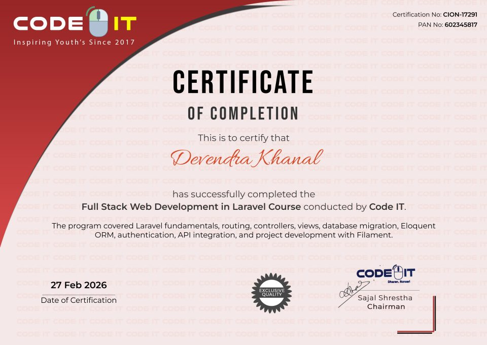
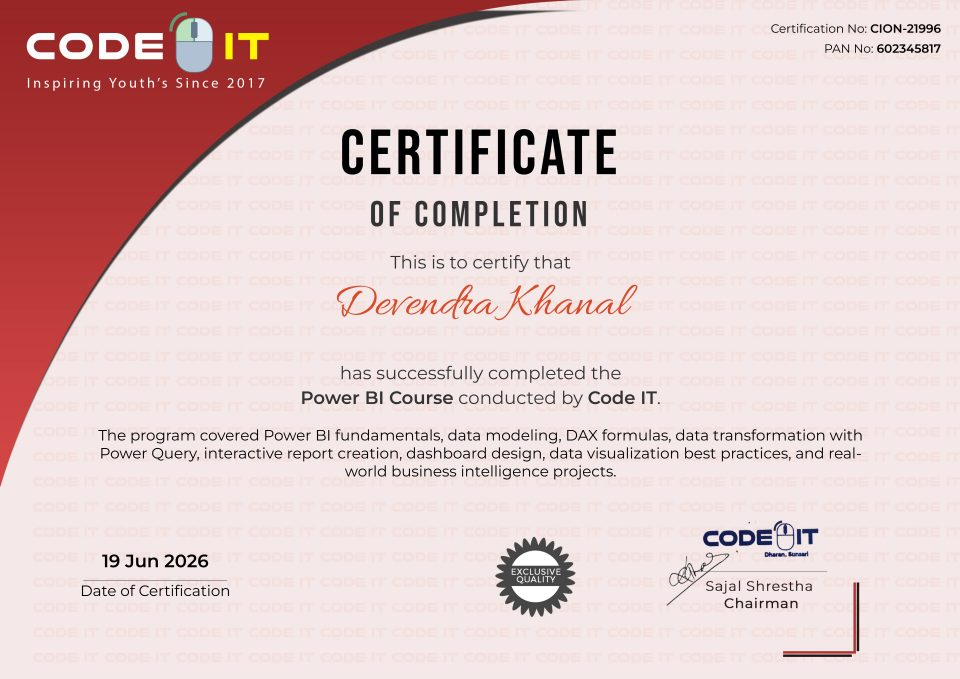
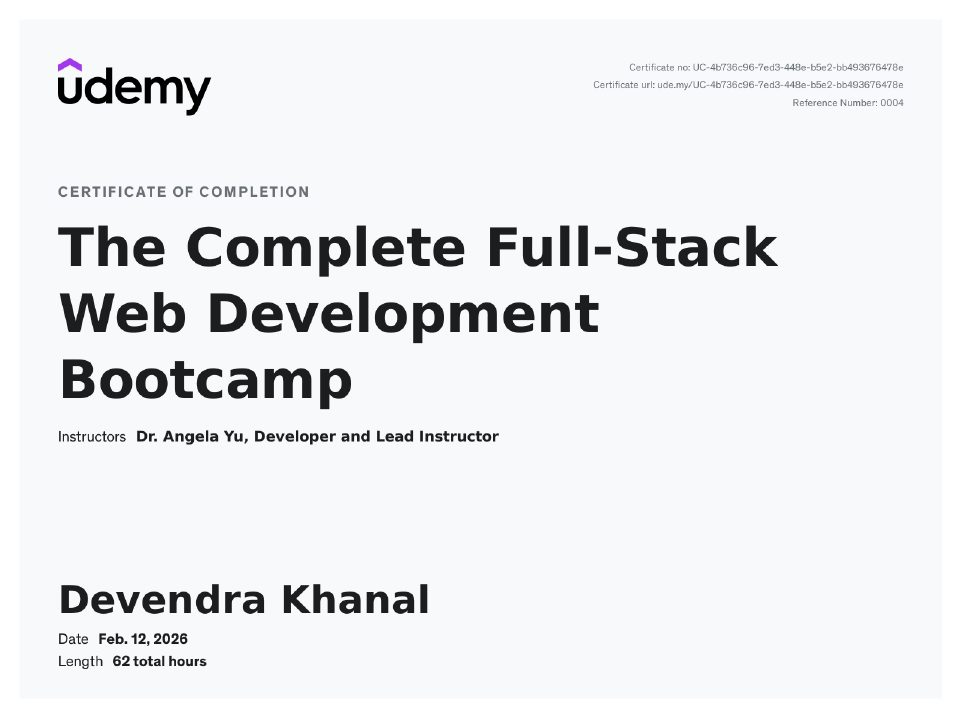
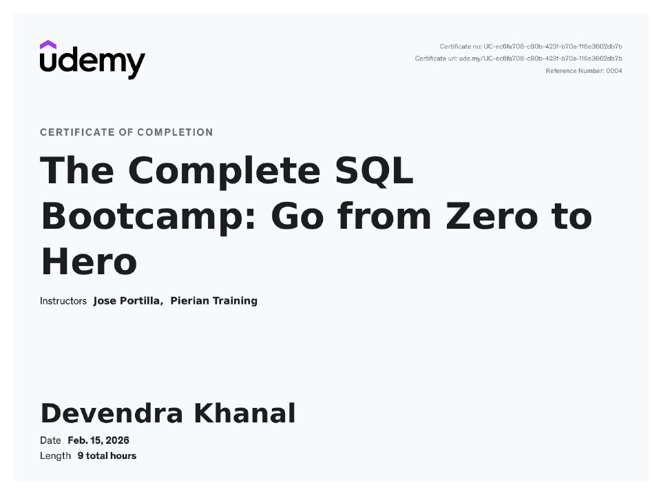
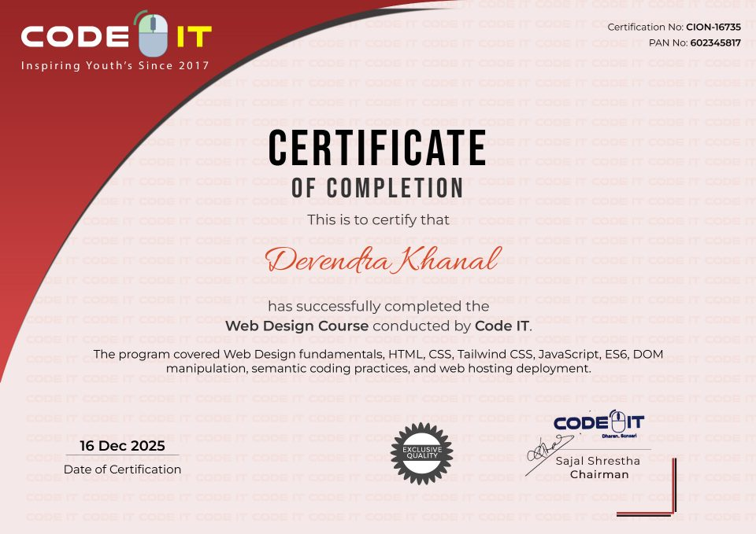
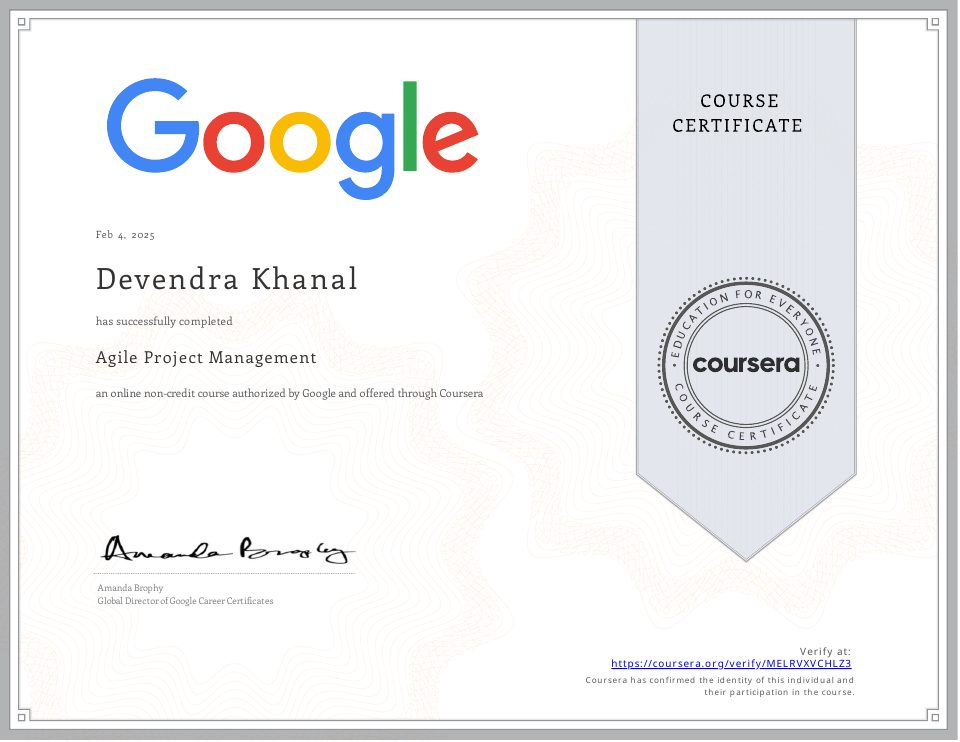
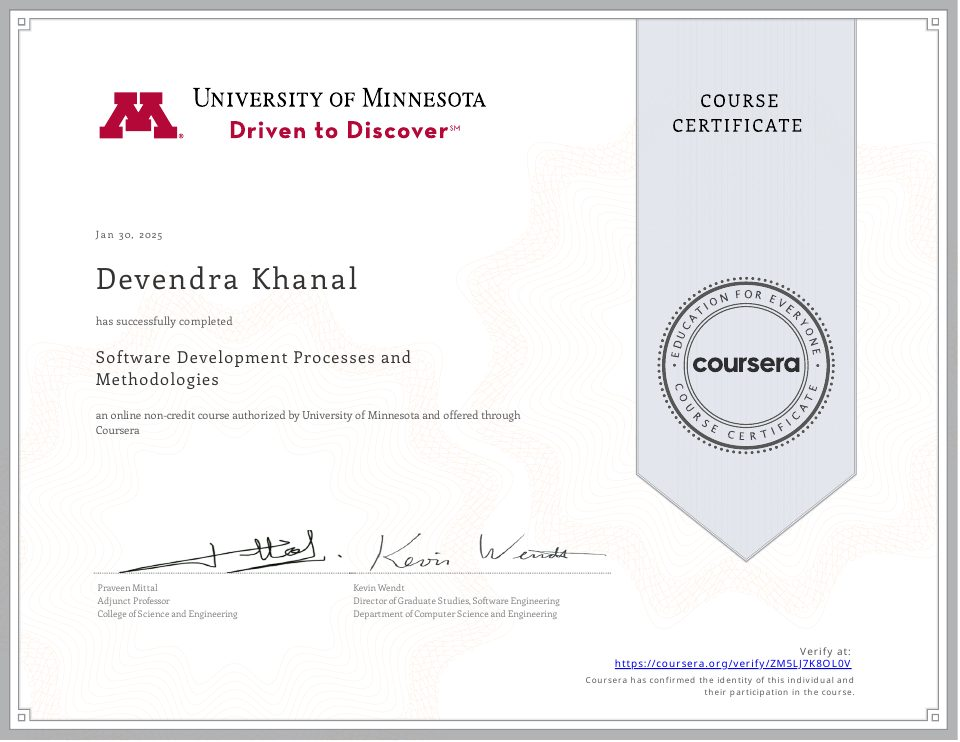
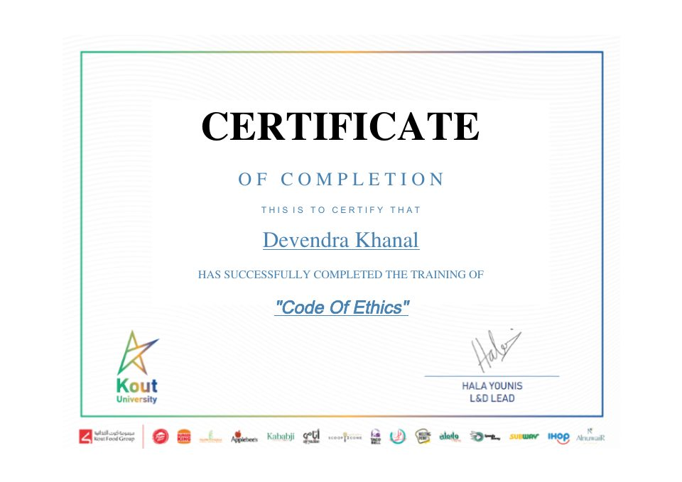

Full Stack Web Development in Laravel
Laravel fundamentals, routing, controllers, views, database migration, Eloquent ORM, authentication, API integration and project development.
View certificate ↗CERTIFICATIONS & CONTINUOUS LEARNING
I actively develop skills that support my transition into technology, product and software solutions roles. Each certificate below can be opened in full.

Laravel fundamentals, routing, controllers, views, database migration, Eloquent ORM, authentication, API integration and project development.
View certificate ↗
Data modeling, DAX, Power Query, dashboard design and business intelligence reporting.
View certificate ↗
A 62-hour full-stack program covering modern front-end and back-end development.
View certificate ↗
Practical SQL skills for querying, filtering, joining and analyzing relational data.
View certificate ↗Core database concepts and SQL for structured data management and reporting.
View certificate ↗Version control, branching, merging, repositories, collaboration and pull request workflows.
View certificate ↗
HTML, CSS, JavaScript, responsive design, DOM manipulation and semantic coding.
View certificate ↗
Agile delivery principles, team collaboration, planning and iterative project management.
View certificate ↗
Software development life cycles, methodologies, quality practices and delivery processes.
View certificate ↗
Workplace ethics, professional responsibility and responsible decision-making.
View certificate ↗MY NEXT STEP
My focus is to apply these skills in technology, product, business systems and software solutions roles.